Design Style 是观默做的一套设计参考库，自我定位是「面向设计师与 AI 的开源设计风格库」。一期拆一种视觉语言或一种排法：给一支代码写成的动效短片、一组风格图、一份带规则与提示词的指南，以及可共用的设计令牌。本站在 2026-10-23 写过导读，当时画廊里只有 3 种风格和 2 种布局。今天按同一条地址复查，短片已经长到 19 部，做法也从单一的 Remotion 管线分出了三维与其他脚本；根目录却仍然没有开源许可证。所以这一页继续只做中文导读，不译 README 全文，也不新收入仓库里的风格图。
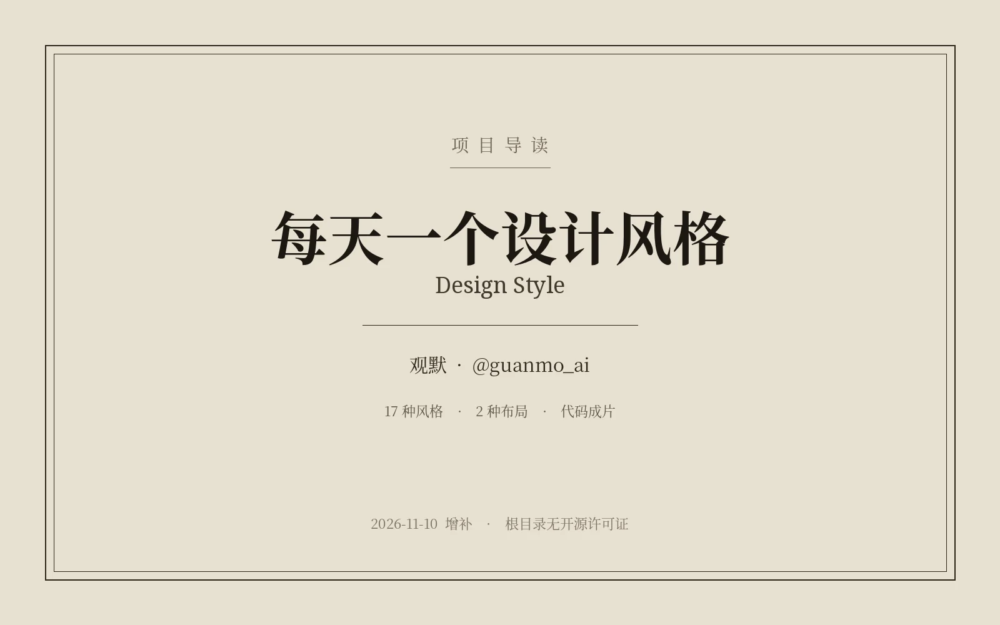
LICENSE、LICENSE.md、LICENSE.txt、COPYING、LICENCE 以及 NOTICE.md 均返回 404；package.json 写明 "private": true，且没有 license 字段；GitHub 仓库页未见 “View license”。根 README「授权」一节的原句是：「代码欢迎学习和改造；转发视频和图片请注明出处 观默 @guanmo_ai」。这不是一份 OSI 意义上的开源许可证。只有 gallery/ 子目录的画廊代码带 MIT License（Copyright (c) 2026 观默 / @guanmo_ai），并写明视频、音频、封面和原有风格素材不在该许可范围内，使用规则以仓库 README 为准。字体另有 SIL OFL 1.1、GUST Font License 与 Apache License 2.0。因此本页不是 README 全文翻译，只用我们自己的话做导读，并保留少量短引。文中沿用 2026-10-23 已上站的缩略图（包豪斯、瑞士、构成主义与两种布局的封面、过程图，以及当时的画廊首页截图），版权归观默 @guanmo_ai；本次不新增仓库图像，也不下载或转载视频。原作者如需删除，请提交移除请求。2026-11-10 复查：从五期到十九部短片
与 10 月那一版相比，变化主要在规模和管线，而不是定位。画廊目录 gallery/data/works.json 在此次核对时共有 19 条已发布作品：17 种设计风格加2 种布局。最早一条仍是 2026-10-20 的包豪斯；最晚一条是 2026-11-09 23:19（新加坡时间）写入的「水墨」。时长不再一律是 15 秒、900 帧：根 README 开篇已改成「15—20 秒动效短片」，规格表同时写了 30 / 60fps。已上线的短片里，波普、字符画、生成艺术、液态金属是 18 秒，点云 19.5 秒，水墨 18.75 秒，新粗野主义、装饰艺术、液态玻璃、微缩景观、低多边形是 20 秒。
制作路径也分开了。早期仍是 Remotion（根目录依赖现为 4.0.538）加 numpy 合成配乐。液态玻璃用到 WebGL；微缩景观在目录数据里标明 videoDir: video3d，标签里有 three.js；字符画与生成艺术的渲染脚本是各期目录下的 video/make.sh，不再走统一的 npm run render:00x。本地运行说明现要求 Node.js 22.12+（旧导读写的是 18+），安装改为 npm ci，并提到浏览器解压安全补丁与 docs/SECURITY.md。本站没有在本地跑渲染或画廊，这些只是对文档的转述。
根 README 的风格目录表没有跟上画廊。表里写到了 021 生成艺术，却没有点云、液态金属和水墨；「计划中」仍列着装饰艺术、新粗野主义、Y2K，而这三样里前两样已经发布，Y2K 则是另一种状态。判断「现在有哪几期」，这次以 works.json 为准，README 目录只作对照。
还有两期写了指南、但没有进入画廊。006 千禧未来主义（Y2K）的风格 README 链到 Release day-06，根 README 却写「视频待补齐，暂未上线」；我们打开该 Release 页，得到 404。015 未来主义（1909—1944）的 README 写「成片审过后发布」，day-15 同样是 404，package.json 里已有对应渲染脚本。两者都未计入上面的 19 部。
公开仓库页 HTML 里嵌入的 stargazerCount，在 2026-11-10（新加坡时间）读到 210；2026-10-23 的笔记是 83。⚠️ 这是页面观察值，未调用 GitHub API，也可能随缓存变化。仓库创建时间仍为 2026-10-20 12:27（新加坡时间）。
这是什么项目
它把内容分成两条线。设计风格用三位期号（如 001 包豪斯、024 水墨），讲一种视觉语言；布局方式用两位期号（01 便当盒、02 瀑布流），讲信息怎么排。作者的原句是：「每天拆解一种设计风格：15 秒动效短片、风格图、设计规则、AI 提示词与完整源码。」现在短片时长已经放宽，但这句话里的结构没有变：给人看的参考，也给模型用的约束。
网页画廊在 guanmo-ai.github.io/design-style，可以按风格或布局筛选、看视频、读指南和制作过程。本页不转载画廊截图的新版本；10 月那张首页缩略仍附在后面，仅作当时形貌的记录。
几个仍然成立的要点
- 一期一招。每期先写出观众能带走的一句话——例如构成主义的「把轴转 30°，版面就开始往前冲」，或液态玻璃的「玻璃不发光，只把后面的东西弯过来」。画面围着这一招展开。
- 以代码出片。早期短片用 Remotion 逐帧写成，配乐和音效用 numpy 合成，风格图是手写 SVG。后来的三维与材质篇补充了 three.js、WebGL 和其他脚本，仍然不是 generational video 模型出片。
- 设计令牌共用。颜色（有的还带面积比例）、字体、线宽、节拍、轴角度写进
tokens.ts/tokens.css/tokens.json，视频、图片和网页用同一套数字。tokens.json也适合直接交给智能体当约束。 - 过程公开。每期有
PROCESS.md；003 起还有MAKING.md，把一期拆成「做什么 → 产出 → 过关」。作者说明 003 是由 AI 智能体在沙盒里做完、人定方向和审片。 - 规格仍严，但不再只有一种时长。转场落在拍点、钩子之后分章、再回顾和片尾，这一骨架还在；风格图仍是 1080×1350 的四张一组；字体声明只用可免费商用的开源字体。短片则已从固定 15 秒扩展到 15–20 秒。
画廊现在有哪几期
下表按 works.json 的记录整理，期号用仓库目录名，避免和画廊里的显示序号混淆——例如孔版印刷的目录是 008，画廊序号却是 006。成片都在 GitHub Releases，本页只给标签链接，不下载视频。时长来自根 README 画廊预览或目录简介，未逐帧测量 ⚠️。
| 目录 | 名称 | 年代（条目所写） | 时长 | Release |
|---|---|---|---|---|
| 001 | 包豪斯 Bauhaus | 1919—1933 | 15 秒 | day-01 |
| 002 | 瑞士国际主义 Swiss Style | 1950—1970 | 15 秒 | day-02 |
| 003 | 构成主义 Constructivism | 1917—1932 | 15 秒 | day-03 |
| 004 | 孟菲斯 Memphis | 1980—1988 | 15 秒 | day-04 |
| 005 | 波普艺术 Pop Art | 1956—1970 | 18 秒 | day-05 |
| 008 | 孔版印刷 Risograph | 1946—今天 | 15 秒 | day-08 |
| 009 | 新粗野主义 Neo-Brutalism | 2021—今天 | 20 秒 | day-09-audio-v2 |
| 013 | 装饰艺术 Art Deco | 1925—1939 | 20 秒 | day-13 |
| 014 | 液态玻璃 Liquid Glass | 2013—今天 | 20 秒 | day-14 |
| 017 | 中世纪现代 Mid-Century Modern | 1945—1965 | 15 秒 | day-17 |
| 018 | 微缩景观 Diorama | 1950s—今天 | 20 秒 | day-18-v3 |
| 019 | 低多边形 Low Poly | 1993—今天 | 20 秒 | day-19 |
| 020 | 字符画 ASCII Art | 1960s—今天 | 18 秒 | day-20 |
| 021 | 生成艺术 Generative Art | 1960s—今天 | 18 秒 | day-21 |
| 022 | 点云 Point Cloud | 条目写 2026 ⚠️ | 19.5 秒 | day-22 |
| 023 | 液态金属 Liquid Chrome | 条目写 2026 ⚠️ | 18 秒 | day-23 |
| 024 | 水墨 Ink Wash | 条目写 2026 ⚠️ | 18.75 秒 | day-24 |
| L01 | 便当盒布局 Bento Grid | 2020s— | 15 秒 | layout-01 |
| L02 | 瀑布流布局 Masonry | 2009— | 15 秒 | layout-02 |
后三期的「年代」在目录里写成 2026，更像条目写入年，而不是风格本身的历史区间，表中已标出。点云一条的简介还写「80 万个点构成文字、兔子、街道与盆景」，这是目录自述，本站未数点 ⚠️。
未进画廊、但仓库里已有指南的两期：006 千禧未来主义 Y2K（1997—2004），根 README 标明视频待补；风格 README 的 Release 链接在此次核对中打不开。015 未来主义 Futurism（1909—1944），一句话是「动的东西，留下它刚才的样子」；成片尚未发布。日式极简等，根 README 仍写在「计划中」，顺序可能调整。
下面五张图是 2026-10-23 导读里用过的早期封面，便于对照当时的规模。本次没有为后来各期另配图。
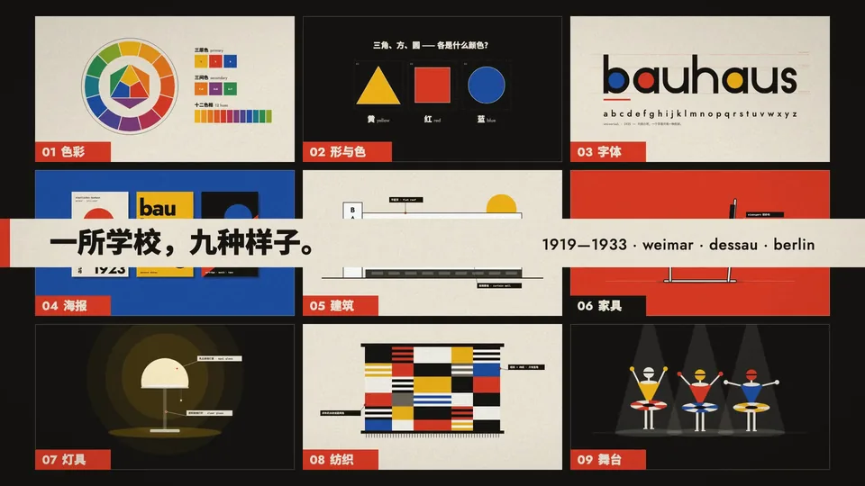
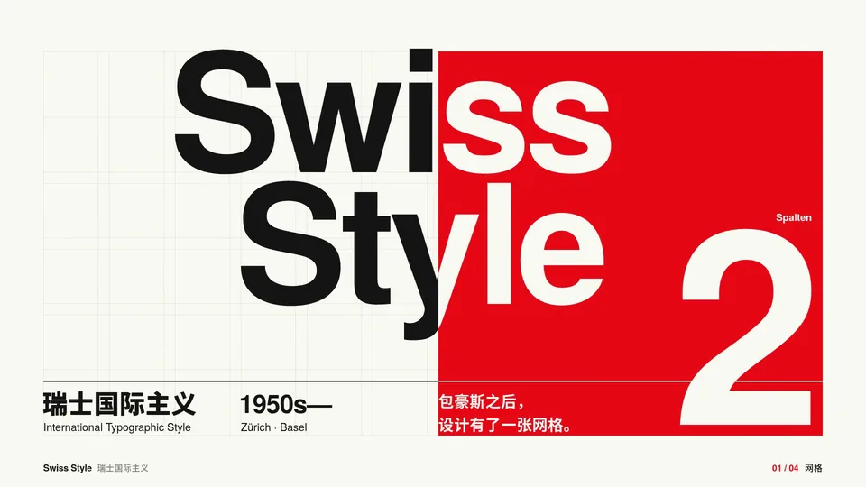
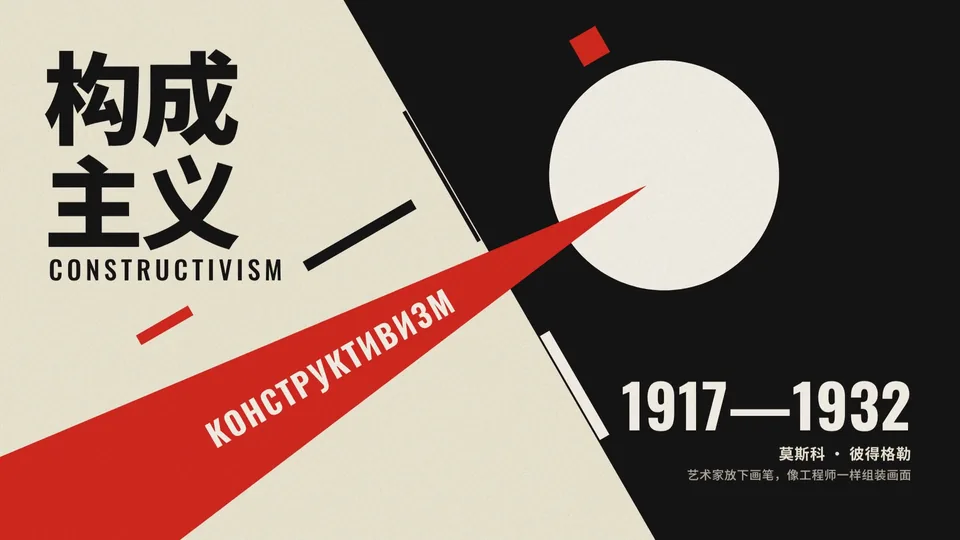
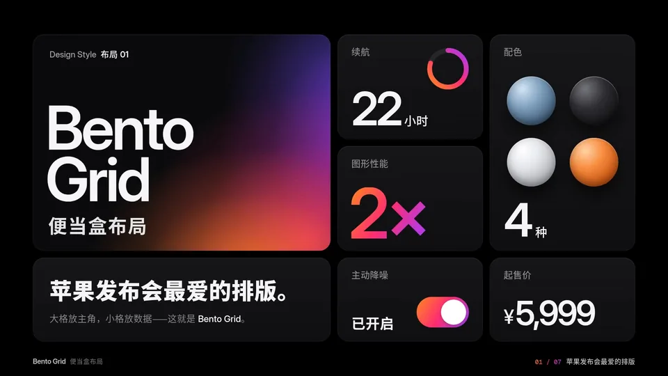
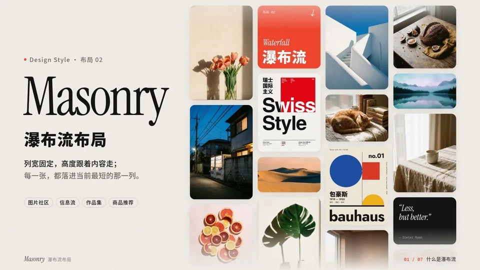
以上五帧取自 2026-10-23 已上站的仓库封面缩略，版权归观默 @guanmo_ai，转为 WebP 缩小后沿用。
每一期仍然有一套固定产出
作者把每期概括为「视频 · 风格图 · 制作过程 · 源代码」。拆开看，和 10 月那一版大体相同，只是视频规格写得更宽：
| 产出 | 规格（据 README 转述） | 对应文件 |
|---|---|---|
| 15—20 秒动效短片 | 1920×1080 · 30 / 60fps · 配乐与音效由代码合成；成片放在 Releases | video/（Remotion 等）或 video3d/（three.js）· audio/make_music.py |
| 4 张风格图 / 布局图 | 1080×1350（X / 小红书竖图比例）；风格多为海报、速查卡、今天的应用、图案或步骤图 | images/*.svg；images/preview/ 内嵌字体子集 |
| 风格 / 布局指南 | 来历、规则、色板、字体、版式、误区、AI 提示词等 | 各期 README.md |
| 设计令牌 | 一份数值，三种格式 | tokens.ts · tokens.css · tokens.json |
| 制作过程 | 研究 → 令牌 → 风格图 → 分镜 → 改版 → 质检 → 发布 | PROCESS.md、process/；部分期有 MAKING.md |
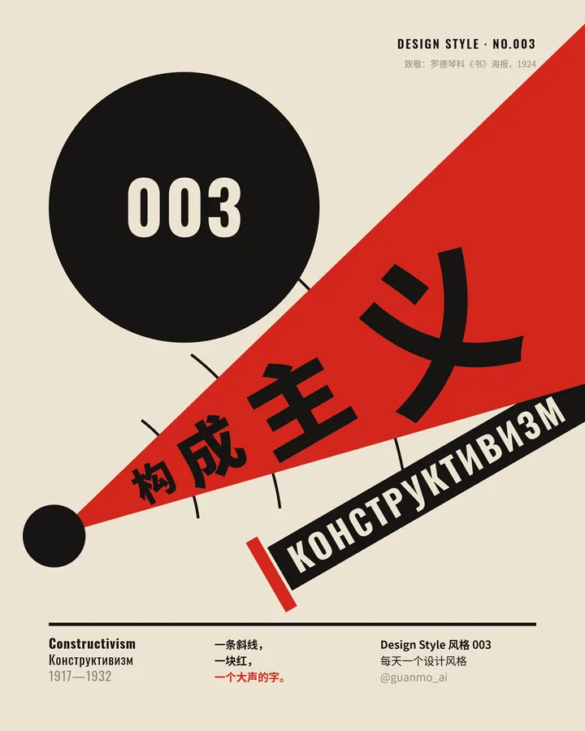
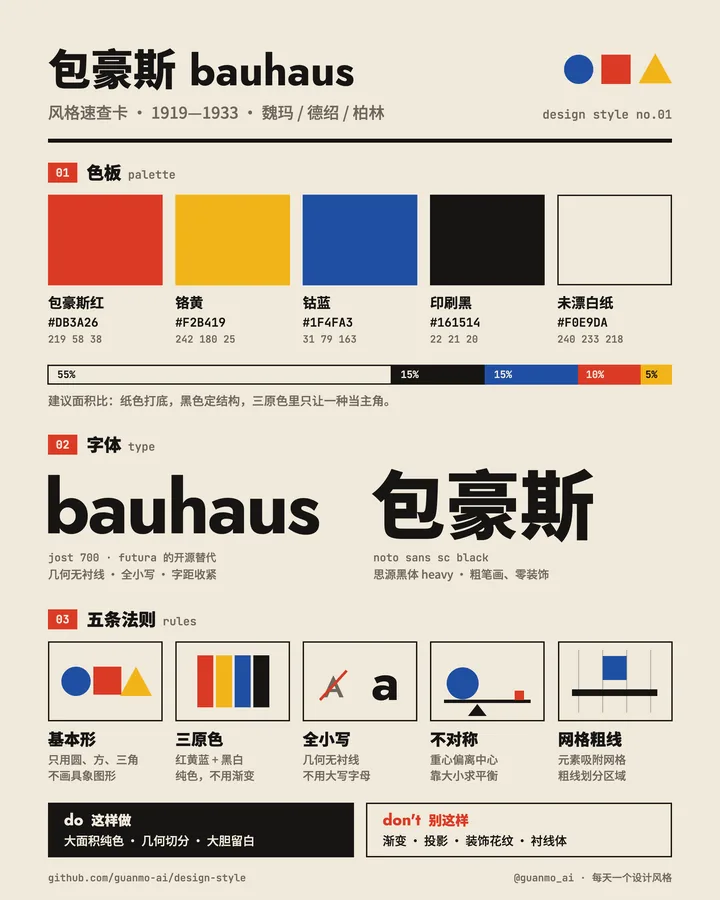
以构成主义的 tokens.json 为例（初版导读已核对）：它不只给色值，还给出面积比例（旧纸约占 50%、印刷黑 30%、构成红 15%、网点灰 5%），以及这一期最关键的轴令牌：主轴 −30°、副轴 60°。后来各期是否都维持同样的令牌密度，本次没有逐份重开。
它是怎么做出来的
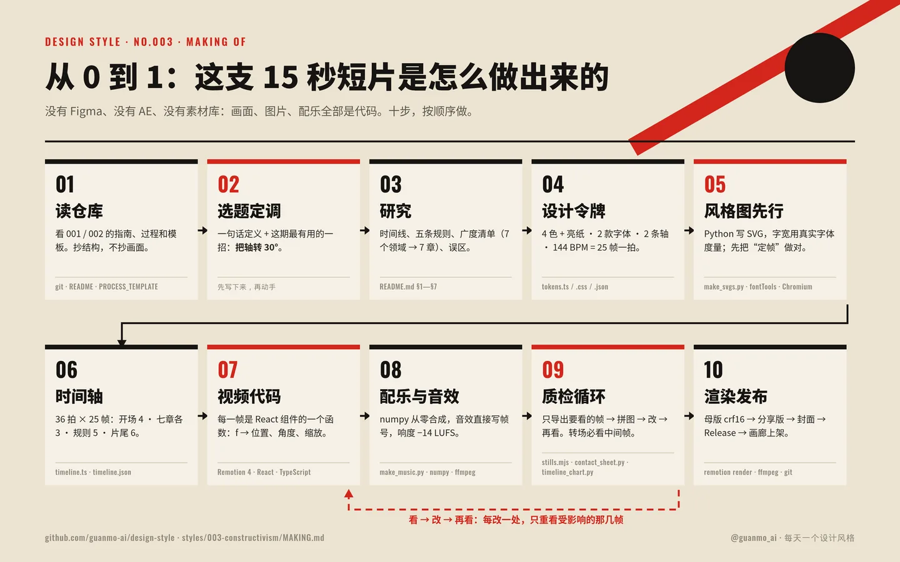
MAKING.md 把一期拆成十步，每一步写明「做什么 → 产出 → 过关」。概括仍是：先读前几期、抄结构不抄画面；写出一句话定义和「一招」；只写查得到的年份和可执行规则；先定令牌再画；风格图当作视频的定帧；先写节拍再写动画；Remotion 里每一帧是 frame → 画面 的函数，过关标准是「任何一帧截下来都能当海报」；配乐与画面共用帧号；导出联系表和时间轴图做质检；最后渲染母版、发 Release、更新画廊。003 之后的新管线（WebGL、three.js、make.sh）是在这套方法上添路，不是另起一套口味。
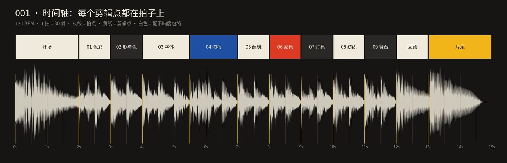
怎么用
若只是看，打开网页画廊即可。若要当设计参考或给智能体当约束，可以把某期 README 里的规则、误区和 AI 提示词，连同 tokens.json 一起交给模型；tokens.css 也可以在网页项目里引用。本地重出成片的命令以仓库当前 README 为准，需要 Node 22.12+、Python 3.10+、ffmpeg；本站未实际运行。003 起的 MAKING.md 还附有「开工提示词」，让智能体按研究 → 令牌 → 风格图 → 时间轴 → 动画 → 声音 → 质检的顺序推进。转载视频和图片，按作者要求注明出处观默 @guanmo_ai；商用边界仍需向作者确认，因为根目录没有许可证。
仓库结构（据 README 转述）
design-style/
├─ src/ Remotion 入口，每期一个 Composition
├─ styles/NNN-name/ 风格指南、PROCESS、tokens、video 或 video3d、配乐与图片
├─ layouts/NN-name/ 布局，结构同风格
├─ gallery/ 网页画廊源码与 works.json（此目录代码为 MIT）
├─ scripts/ 字体、转图、截帧、画廊构建
├─ docs/ 过程模板、画廊维护、安全说明
└─ public/ 字体与生成的音频（不入库）网页画廊
画廊是独立的静态站：构建时读取本仓库 Releases，下载视频并校验 SHA-256，再把每期指南转成站内阅读页。GitHub Actions 在推送 main 时跑测试、核验和部署，失败就不发布。视觉上沿用了作者另一个项目 Awesome AI Motion 的暖纸色样式；gallery/NOTICE.md 说明沿用的是样式与字体，不含那边的作品数据。仓库首页 README 顶部的预览表由脚本按 works.json 生成，所以它比正文里的目录表更接近「现在上线了什么」。下图是 2026-10-23 的画廊首页截图，不能代表今天的目录。
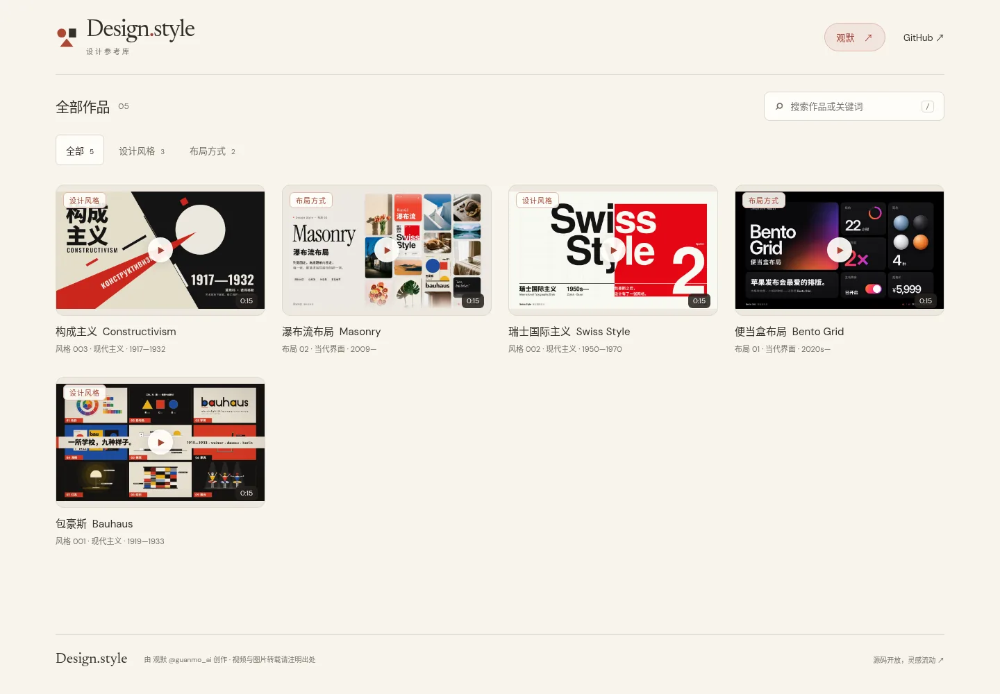
评论
- 「给 AI 的审美参考」这一点仍然准。比起一句风格提示词，这里给的是可计算的约束：色值、面积、字体、网格、轴角度、节拍。这正是编码智能体比较不容易跑偏的形式。
- 「先把静止画面做对，再让它动」依然是对代码动效最管用的一条经验，和本站其他 Remotion 手册里的静帧评审是同一类方法。
- 仓库在三周里从 5 期长到 19 部已发布短片，并且愿意为三维、印刷、水墨另开管线，说明这不是一份写完就停的样本册。缺号（006、015 以及若干未在目录出现的期号）和 README 目录滞后，则说明发布节奏已经快过文档整理。
- 根目录仍然没有开源许可证。作者欢迎学习、改造代码，并要求转发视频和图片时署名；这解决了礼貌问题，没有解决派生作品和商用的法律边界。引用、学习可以，再分发或商用前应向作者确认。
本站相关
- 15 种 MG 动态设计风格——同样是「一个风格一支代码短片」，规则主要写在提示词里，而不是令牌文件。
- OPUSCAR 98——影像风格包的另一种规模。
- Shanshui——用代码画水墨山水；可与本库新上线的「水墨」一期对照，路线不同。
- 用 Opus 5.5 做动效工程——Remotion 帧号驱动、静帧评审，与本项目的 MAKING 互相印证。
- Opus 5.5 动效手册
- Eian 孟菲斯微缩世界——同一孟菲斯语汇，走的是提示词短片，而不是本库这种令牌 + 源码的写法。
来源与授权
- 原项目：https://github.com/guanmo-ai/design-style（作者 观默 @guanmo_ai）；网页画廊：https://guanmo-ai.github.io/design-style/
- 许可状态（2026-11-10 新加坡时间重核）：根目录无开源许可证；README 声明「代码欢迎学习和改造，转发视频和图片请注明出处 观默 @guanmo_ai」；
gallery/目录代码为 MIT，不含视频与风格素材；字体为 SIL OFL 1.1 / GUST Font License / Apache License 2.0（Tinos）。 - 本页处理方式：中文导读（非翻译），仅短摘引；沿用 2026-10-23 已上站的缩略图，并自制题头封面；不新增仓库图像，不转载视频。
- 删除请求：https://github.com/BreakDimbo/zh-blog-mirrors/issues/new?title=Removal%20request